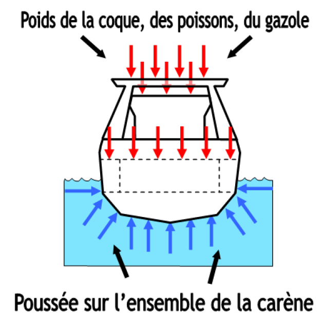

La pesanteur sur le navire
Sur le navire il existe deux forces principales qui agissent sur la stabilité du navire.

La première ici représentée en rouge est la force de pesanteur
La PESANTEUR (ou gravité)
La pesanteur (aussi appelée gravité) est due à l'attraction terrestre sur toutes les parties du navire et sur tous les objets qui sont embarqués.
Elle a tendance à enfoncer le navire vers le bas.
Chaque objet embarqué et chaque partie du navire est soumis à une force vers le bas.
Il y a donc une multitude de forces qui s'appliquent à toutes les parties du navire (sur le schéma ci dessus flèches en rouge)